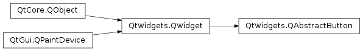

QAbstractButton¶
Inherited by: QCheckBox, QToolButton, QPushButton, QCommandLinkButton, QRadioButton
Synopsis¶
Functions¶
- def
autoExclusive() - def
autoRepeat() - def
autoRepeatDelay() - def
autoRepeatInterval() - def
group() - def
icon() - def
iconSize() - def
isCheckable() - def
isChecked() - def
isDown() - def
setAutoExclusive(arg__1) - def
setAutoRepeat(arg__1) - def
setAutoRepeatDelay(arg__1) - def
setAutoRepeatInterval(arg__1) - def
setCheckable(arg__1) - def
setDown(arg__1) - def
setIcon(icon) - def
setShortcut(key) - def
setText(text) - def
shortcut() - def
text()
Virtual functions¶
- def
checkStateSet() - def
hitButton(pos) - def
nextCheckState()
Slots¶
- def
animateClick([msec=100]) - def
click() - def
setChecked(arg__1) - def
setIconSize(size) - def
toggle()
Detailed Description¶
The
PySide2.QtWidgets.QAbstractButtonclass is the abstract base class of button widgets, providing functionality common to buttons.This class implements an abstract button. Subclasses of this class handle user actions, and specify how the button is drawn.
PySide2.QtWidgets.QAbstractButtonprovides support for both push buttons and checkable (toggle) buttons. Checkable buttons are implemented in thePySide2.QtWidgets.QRadioButtonandPySide2.QtWidgets.QCheckBoxclasses. Push buttons are implemented in thePySide2.QtWidgets.QPushButtonandPySide2.QtWidgets.QToolButtonclasses; these also provide toggle behavior if required.Any button can display a label containing text and an icon.
PySide2.QtWidgets.QAbstractButton.setText()sets the text;PySide2.QtWidgets.QAbstractButton.setIcon()sets the icon. If a button is disabled, its label is changed to give the button a “disabled” appearance.If the button is a text button with a string containing an ampersand (‘&’),
PySide2.QtWidgets.QAbstractButtonautomatically creates a shortcut key. For example:button = QPushButton(QObject.tr("Ro&ck && Roll"), self)The Alt+C shortcut is assigned to the button, i.e., when the user presses Alt+C the button will call
PySide2.QtWidgets.QAbstractButton.animateClick(). See theQShortcutdocumentation for details. To display an actual ampersand, use ‘&&’.You can also set a custom shortcut key using the
PySide2.QtWidgets.QAbstractButton.setShortcut()function. This is useful mostly for buttons that do not have any text, and therefore can’t have any automatic shortcut.button.setIcon(QIcon(":/images/print.png")) button.setShortcut(tr("Alt+F7"))All the buttons provided by Qt (
PySide2.QtWidgets.QPushButton,PySide2.QtWidgets.QToolButton,PySide2.QtWidgets.QCheckBox, andPySide2.QtWidgets.QRadioButton) can display bothPySide2.QtWidgets.QAbstractButton.text()and icons .A button can be made the default button in a dialog by means of
QPushButton.setDefault()andQPushButton.setAutoDefault().
PySide2.QtWidgets.QAbstractButtonprovides most of the states used for buttons:
PySide2.QtWidgets.QAbstractButton.isDown()indicates whether the button is pressed down.
PySide2.QtWidgets.QAbstractButton.isChecked()indicates whether the button is checked. Only checkable buttons can be checked and unchecked (see below).
PySide2.QtWidgets.QWidget.isEnabled()indicates whether the button can be pressed by the user.Note
As opposed to other widgets, buttons derived from
PySide2.QtWidgets.QAbstractButtonaccept mouse and context menu events when disabled.
PySide2.QtWidgets.QAbstractButton.setAutoRepeat()sets whether the button will auto-repeat if the user holds it down.PySide2.QtWidgets.QAbstractButton.autoRepeatDelay()andPySide2.QtWidgets.QAbstractButton.autoRepeatInterval()define how auto-repetition is done.
PySide2.QtWidgets.QAbstractButton.setCheckable()sets whether the button is a toggle button or not.The difference between
PySide2.QtWidgets.QAbstractButton.isDown()andPySide2.QtWidgets.QAbstractButton.isChecked()is as follows. When the user clicks a toggle button to check it, the button is first pressed then released into the checked state. When the user clicks it again (to uncheck it), the button moves first to the pressed state, then to the unchecked state (PySide2.QtWidgets.QAbstractButton.isChecked()andPySide2.QtWidgets.QAbstractButton.isDown()are both false).
PySide2.QtWidgets.QAbstractButtonprovides four signals:
PySide2.QtWidgets.QAbstractButton.pressed()is emitted when the left mouse button is pressed while the mouse cursor is inside the button.PySide2.QtWidgets.QAbstractButton.released()is emitted when the left mouse button is released.PySide2.QtWidgets.QAbstractButton.clicked()is emitted when the button is first pressed and then released, when the shortcut key is typed, or whenPySide2.QtWidgets.QAbstractButton.click()orPySide2.QtWidgets.QAbstractButton.animateClick()is called.PySide2.QtWidgets.QAbstractButton.toggled()is emitted when the state of a toggle button changes.To subclass
PySide2.QtWidgets.QAbstractButton, you must reimplement at leastPySide2.QtWidgets.QAbstractButton.paintEvent()to draw the button’s outline and its text or pixmap. It is generally advisable to reimplementPySide2.QtWidgets.QWidget.sizeHint()as well, and sometimesPySide2.QtWidgets.QAbstractButton.hitButton()(to determine whether a button press is within the button). For buttons with more than two states (like tri-state buttons), you will also have to reimplementPySide2.QtWidgets.QAbstractButton.checkStateSet()andPySide2.QtWidgets.QAbstractButton.nextCheckState().See also
-
class
PySide2.QtWidgets.QAbstractButton([parent=nullptr])¶ Parameters: parent – PySide2.QtWidgets.QWidgetConstructs an abstract button with a
parent.
-
PySide2.QtWidgets.QAbstractButton.animateClick([msec=100])¶ Parameters: msec – PySide2.QtCore.intPerforms an animated click: the button is pressed immediately, and released
msecmilliseconds later (the default is 100 ms).Calling this function again before the button is released resets the release timer.
All signals associated with a click are emitted as appropriate.
This function does nothing if the button is
disabled.
-
PySide2.QtWidgets.QAbstractButton.autoExclusive()¶ Return type: PySide2.QtCore.bool
-
PySide2.QtWidgets.QAbstractButton.autoRepeat()¶ Return type: PySide2.QtCore.bool
-
PySide2.QtWidgets.QAbstractButton.autoRepeatDelay()¶ Return type: PySide2.QtCore.int
-
PySide2.QtWidgets.QAbstractButton.autoRepeatInterval()¶ Return type: PySide2.QtCore.int
-
PySide2.QtWidgets.QAbstractButton.checkStateSet()¶ This virtual handler is called when
PySide2.QtWidgets.QAbstractButton.setChecked()is used, unless it is called from withinPySide2.QtWidgets.QAbstractButton.nextCheckState(). It allows subclasses to reset their intermediate button states.
-
PySide2.QtWidgets.QAbstractButton.click()¶ Performs a click.
All the usual signals associated with a click are emitted as appropriate. If the button is checkable, the state of the button is toggled.
This function does nothing if the button is
disabled.
-
PySide2.QtWidgets.QAbstractButton.clicked([checked=false])¶ Parameters: checked – PySide2.QtCore.bool
-
PySide2.QtWidgets.QAbstractButton.group()¶ Return type: PySide2.QtWidgets.QButtonGroupReturns the group that this button belongs to.
If the button is not a member of any
PySide2.QtWidgets.QButtonGroup, this function returns 0.See also
-
PySide2.QtWidgets.QAbstractButton.hitButton(pos)¶ Parameters: pos – PySide2.QtCore.QPointReturn type: PySide2.QtCore.boolReturns
trueifposis inside the clickable button rectangle; otherwise returnsfalse.By default, the clickable area is the entire widget. Subclasses may reimplement this function to provide support for clickable areas of different shapes and sizes.
-
PySide2.QtWidgets.QAbstractButton.icon()¶ Return type: PySide2.QtGui.QIcon
-
PySide2.QtWidgets.QAbstractButton.iconSize()¶ Return type: PySide2.QtCore.QSize
-
PySide2.QtWidgets.QAbstractButton.isCheckable()¶ Return type: PySide2.QtCore.bool
-
PySide2.QtWidgets.QAbstractButton.isChecked()¶ Return type: PySide2.QtCore.bool
-
PySide2.QtWidgets.QAbstractButton.isDown()¶ Return type: PySide2.QtCore.bool
-
PySide2.QtWidgets.QAbstractButton.nextCheckState()¶ This virtual handler is called when a button is clicked. The default implementation calls
PySide2.QtWidgets.QAbstractButton.setChecked()(!PySide2.QtWidgets.QAbstractButton.isChecked()) if the buttonPySide2.QtWidgets.QAbstractButton.isCheckable(). It allows subclasses to implement intermediate button states.
-
PySide2.QtWidgets.QAbstractButton.pressed()¶
-
PySide2.QtWidgets.QAbstractButton.released()¶
-
PySide2.QtWidgets.QAbstractButton.setAutoExclusive(arg__1)¶ Parameters: arg__1 – PySide2.QtCore.bool
-
PySide2.QtWidgets.QAbstractButton.setAutoRepeat(arg__1)¶ Parameters: arg__1 – PySide2.QtCore.bool
-
PySide2.QtWidgets.QAbstractButton.setAutoRepeatDelay(arg__1)¶ Parameters: arg__1 – PySide2.QtCore.int
-
PySide2.QtWidgets.QAbstractButton.setAutoRepeatInterval(arg__1)¶ Parameters: arg__1 – PySide2.QtCore.int
-
PySide2.QtWidgets.QAbstractButton.setCheckable(arg__1)¶ Parameters: arg__1 – PySide2.QtCore.bool
-
PySide2.QtWidgets.QAbstractButton.setChecked(arg__1)¶ Parameters: arg__1 – PySide2.QtCore.bool
-
PySide2.QtWidgets.QAbstractButton.setDown(arg__1)¶ Parameters: arg__1 – PySide2.QtCore.bool
-
PySide2.QtWidgets.QAbstractButton.setIcon(icon)¶ Parameters: icon – PySide2.QtGui.QIcon
-
PySide2.QtWidgets.QAbstractButton.setIconSize(size)¶ Parameters: size – PySide2.QtCore.QSize
-
PySide2.QtWidgets.QAbstractButton.setShortcut(key)¶ Parameters: key – PySide2.QtGui.QKeySequence
-
PySide2.QtWidgets.QAbstractButton.setText(text)¶ Parameters: text – unicode
-
PySide2.QtWidgets.QAbstractButton.shortcut()¶ Return type: PySide2.QtGui.QKeySequence
-
PySide2.QtWidgets.QAbstractButton.text()¶ Return type: unicode
-
PySide2.QtWidgets.QAbstractButton.toggle()¶ Toggles the state of a checkable button.
See also
checked()
-
PySide2.QtWidgets.QAbstractButton.toggled(checked)¶ Parameters: checked – PySide2.QtCore.bool
© 2018 The Qt Company Ltd. Documentation contributions included herein are the copyrights of their respective owners. The documentation provided herein is licensed under the terms of the GNU Free Documentation License version 1.3 as published by the Free Software Foundation. Qt and respective logos are trademarks of The Qt Company Ltd. in Finland and/or other countries worldwide. All other trademarks are property of their respective owners.